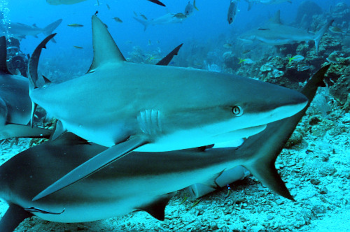

CATÁLOGO DE TUBARÕES
Tubarão Galha Branca
O tubarão-galha-branca-oceânico (Carcharhinus longimanus) é um grande tubarão pelágico da família dos carcarinídeos que habita principalmente os mares tropicais e temperados quentes. Ele se alimenta de peixes ósseos, cefalópodes e, ocasionalmente, aves marinhas. Em relação a seres humanos, é considerado potencialmente perigoso, já que costuma se aproximar de náufragos em mar aberto.
Características:
- Corpo robusto e barbatanas longas com pontas brancas
- Cresce até cerca de 4 metros
- Grande capacidade de resistência em longas viagens oceânicas
- Reconhecido por sua curiosidade e persistência
O tubarão-galha-branca é um dos predadores mais resilientes do alto-mar, adaptado para longos deslocamentos e para sobreviver em águas distantes da costa.— Dr. Steven Polvo
Em resumo, este tubarão é um dos mais emblemáticos habitantes do mar aberto, essencial para o equilíbrio ecológico das áreas oceânicas.
Saiba mais em: Wikipédia